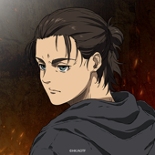

Senku es un joven extremadamente inteligente con un gran don para la ciencia y una ácida personalidad, y su mejor amigo es Taiju, que es muy buena persona pero más apto para usar los músculos que para pensar. Cuando tras cierto incidente toda la humanidad acaba convertida en piedra, ellos logran despertarse en un mundo miles de años después, con la civilización humana completamente desaparecida y con toda la humanidad congelada en piedra como ellos estuvieron. Ahora es su obligación rescatar a la gente y crear un nuevo mundo.